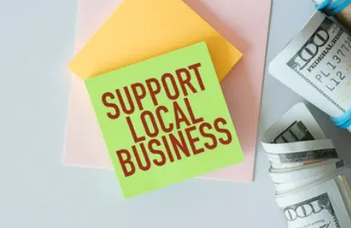

Concord Chamber of Commerce
Experiences that will change your life!
Tips and guidelines from other business nearby
Create community in Concord Chamber Today!
"Unlock New Opportunities, Foster Growth, and Discover the Power of Partnership and Prosperity."
3-Day Weather Forecast
Day
Date
Temp

words
day
date
temp
day
date
temp
Our mission is to cultivate an environment where our members can operate more successfully.
We aim to create a climate that enables businesses to realize the benefits of increased economic activity and heightened community involvement.
From the smallest enterprises to the most established corporations, the Concord Chamber of Commerce is committed to supporting our members at every stage of their journey.
Members' Spotlight
learn more on our Directory page about how to join the chamber!
Upcoming Events
Importance of Networking
Getting involved with the Chamber of Commerce community through events and other activities can really help your business. The chamber is like a big group of local businesses and people working together.
When you join their events, you get to meet important people, like potential clients and partners. Talking with others at these events can help you come up with new ideas for your business.
Also, being part of community activities shows that you care about your local area, making your business look trustworthy and reliable. Getting noticed in these events can boost your business's reputation and make more people aware of what you do.
So, by being active with the Chamber of Commerce, you're not just growing your network, you're also becoming a part of a supportive community that can help your business succeed.